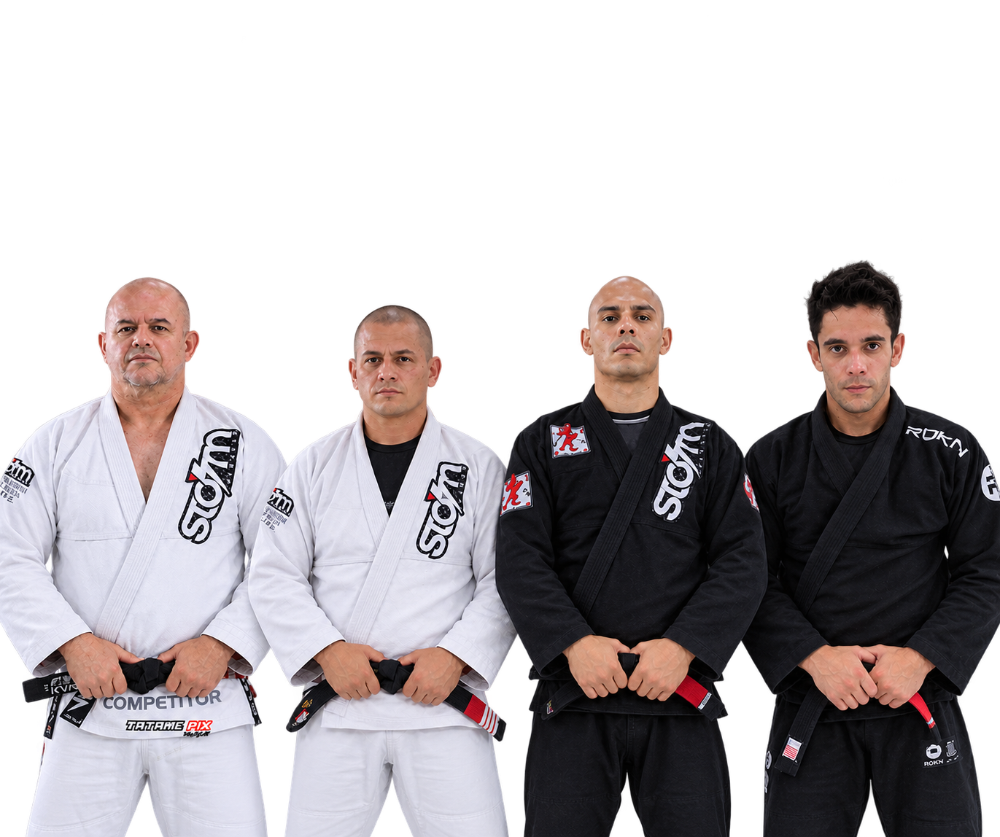
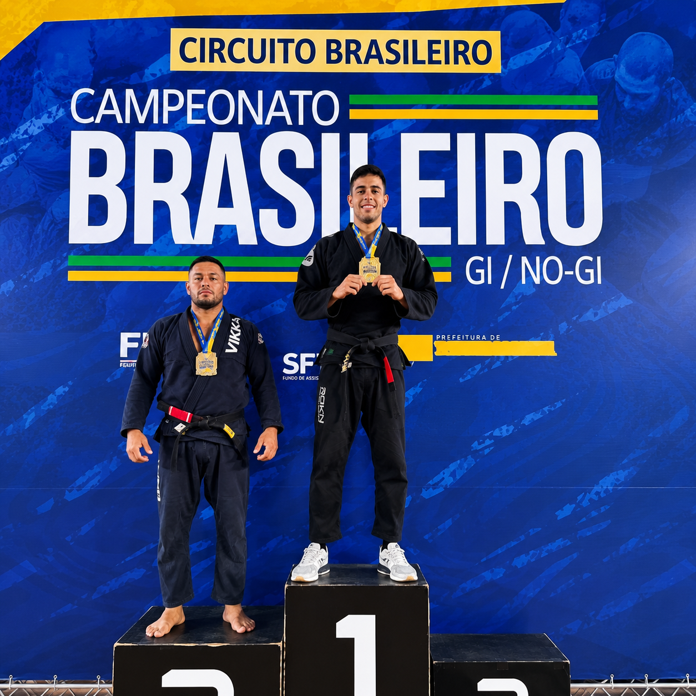
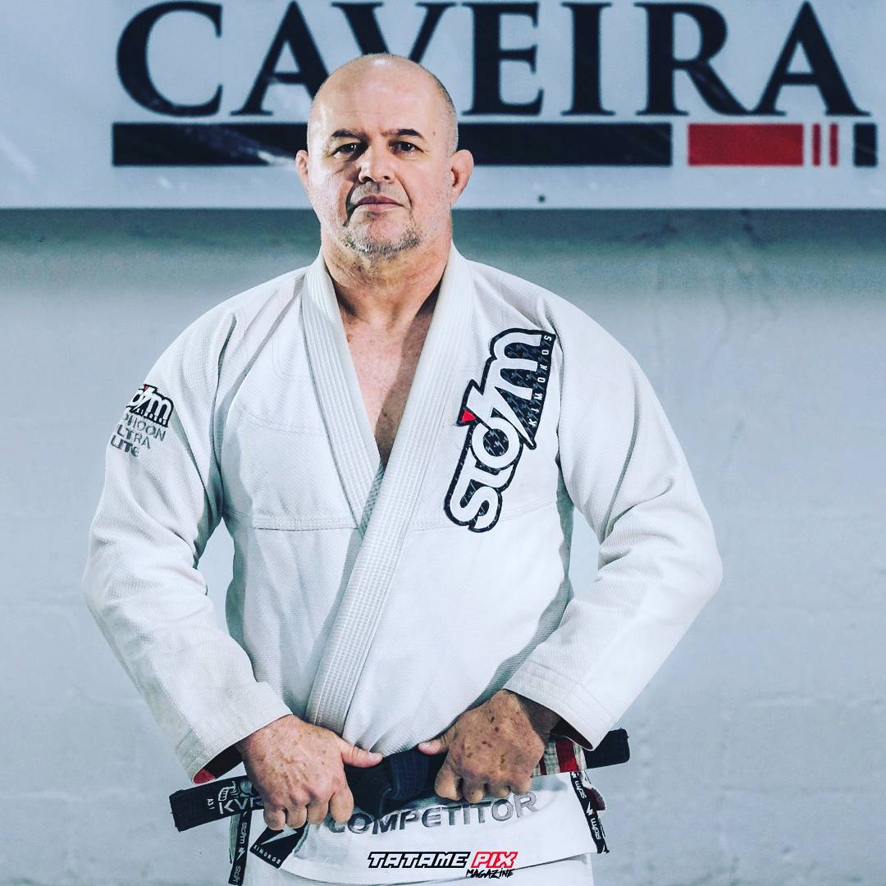
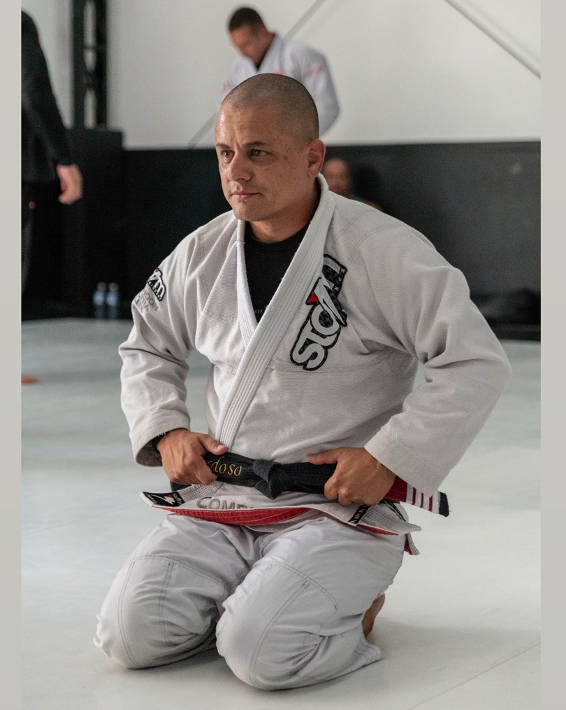

CT Caveira — treino, técnica e competição de Jiu-Jitsu pra crianças e adultos, no Jardim Oriente. Venha treinar com quem forma atletas de verdade.
A CT Caveira é uma academia de Jiu-Jitsu no Jardim Oriente, em São José dos Campos, com aulas pra crianças e adultos. O foco é claro: disciplina, respeito e evolução — dentro e fora do tatame.
O treino une base técnica sólida com preparação pra competição, acompanhado por um corpo de professores que leva o esporte a sério — incluindo o faixa preta e campeão mundial Rodrigo Zanella.
Aulas separadas por idade e objetivo, sempre com atenção técnica de verdade — não é só "bater cartão".
Disciplina, respeito e os fundamentos do esporte trabalhados de forma lúdica e segura pras crianças.
Treino técnico completo, do iniciante ao competidor, com progressão de faixa acompanhada de perto.
Pra quem quer ir além do treino recreativo e representar a academia em campeonatos.
A CT Caveira tem três unidades — cada uma com WhatsApp próprio pra agendar sua aula experimental direto com quem ensina lá.
Praça Mikado, 74 — Jardim Oriente
São José dos Campos, SP

Professor na CT Caveira, campeão mundial de Jiu-Jitsu pela SJJIF (Japão). Une formação técnica em Educação Física com experiência real de competição.
Conhecer o projeto do Rodrigo
Professor na CT Caveira, presente na formação e progressão de faixa dos alunos da academia.
Seguir no Instagram2x Campeão Mundial CBJJE, prata no WorldPro e no PanAm IBJJF, bronze no Mundial IBJJF — competidor ativo e professor na CT Caveira.
Seguir no Instagram
Professor na CT Caveira, unidade São José dos Campos.
Seguir no InstagramAgenda uma aula experimental e conhece a estrutura, os professores e o método da CT Caveira de perto.